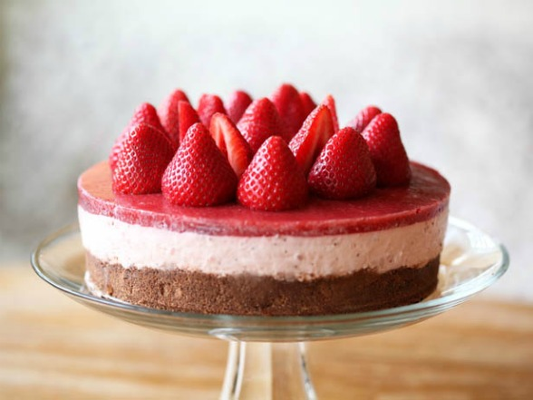

Yummy in my Tummy Cheesecake

Ingredients
Tarte Portion
- butter - 60g
- egg yolk - 1
- sugar - 40g
- flour - 120g
Filling
- heavy cream - 1 cup
- eggs - 2
- cream cheese - 1 pack
- flour - 3 TBSP
- sugar - 2/3 cup
- lemon juice - 1 tbsp
Instructions
- preheat oven to 350 F
- put in food processor
- in a cake pan, press the mix to create a crust
- bake at 350 F for 10 min
- put in food processor
- pour onto crust
- bake at 350 F for about 30 min.
Time will depend on oven strength.